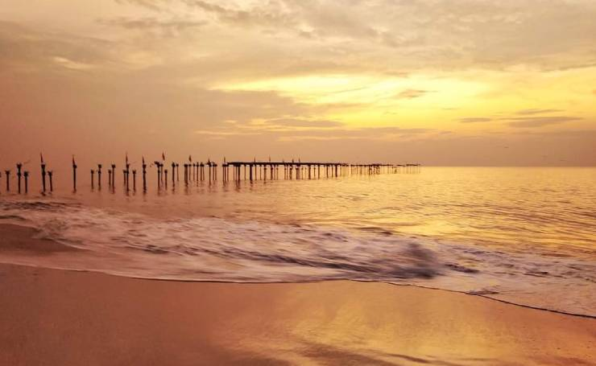
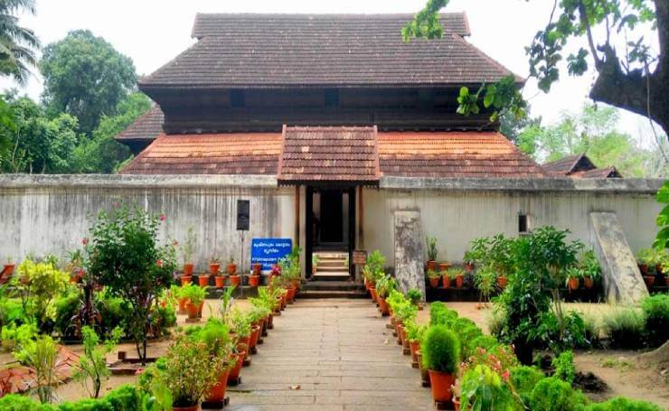
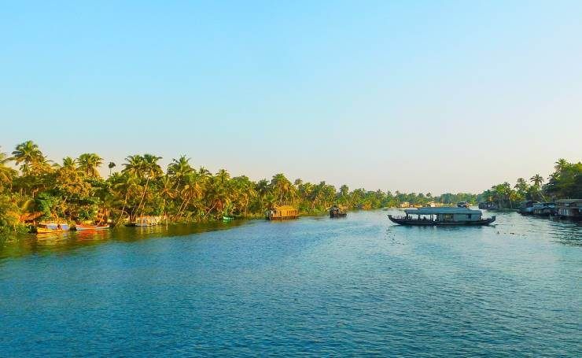
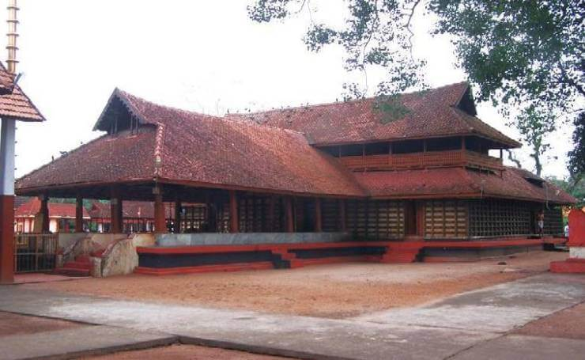

Have any question?
Dial toll free No: +12 365 5233

ABOUT DISTRICT
Alapuzha: Venice of the East
Alappuzha-also known by its former name Alleppey, is the administrative headquarters of Alappuzha district in the Indian state of Kerala. Alleppey is a city and a municipality in Kerala with an urban population of 174,164[1] and ranks third among the districts in literacy rate in the state. In 2016, the Centre for Science and Environment rated Alappuzha as the cleanest town in India.[2] Alappuzha is considered to be the oldest planned city in this region and the lighthouse built on the coast of the city is the first of its kind along the Laccadive Sea coast

Alappuzha beach is one of the most popular tourist attractions in Alleppey. Less crowded, scenic, serene and enchanting, Alappuzha Beach will make your beach holidays one of the best to remember. Dense palm groves and soul soothing serenity of the park nearby, freshwater rivers and Scenic Arabian Sea is just a perfect need to spend some moments in peace.
Be it honeymooners, families or solo travellers, this is absolutely a worth visiting place to enjoy the watery wealth of God’s own country Kerala. For Adventure lovers there are plethora of activities to enjoy like parasailing, beach volleyball, & surfing. There is also a 150-year-old Alappuzha Lighthouse which was built in 1862 in the reign of Rama Varma Maharaja of Travancore, which you should not miss while enjoying the beauty of Alappuzha Beach.

Krishnapuram Palace is a rare specimen of the glorious ancient past of Kerala. It was built in the 18th century by Anizham Thirunal Marthanda Varma, the ruler of Travancore. It is one of the most beautiful masterpieces of Kerala Style architecture. Thick-framed doors, narrow corridors, gabled roofs and dormer windows will teleport you into the world of bliss. Most of the small units of the palace are lost in the ravages of time, only the main structure has survived.
The mural of Gajendra Moksham is the centre of attraction of Krishnapuram Palace. It depicts the mythological story of Lord Vishnu who reached earth to save an Elephant (devotee of Lord Vishnu). The mural is placed at the entrance of the palace from the pond so that the kings could bow down to the deity after their bath.It is the best tourist attractions in Alleppey.

Vembanad Lake is a stunning tourist stopover that one must not miss. Decked with Mangrove forests all around with coconut trees, a cruise on a houseboat is the best thing to do to enjoy the best of Kerala Tourism. On a houseboat you will pass through narrow canals, lagoon islands, tiny hamlets and experience the simple and serene countryside lifestyle. Your imagination will run wild and you will be lost in the world of fantasy.
The experience of cruising in 60ft long and 15ft wide traditional Kettuvallam will be the experience of a lifetime. Don’t forget to visit the beautiful island of Pathiramanal which floats on the backwaters and it hosts 50 species of exotic and 90 species of endemic birds. Vembanad Lake is one of the best backwater destinations to visit around Alleppey. Do not miss an opportunity

Mullakkal Rajarajeswari Temple or Mullakkal Bhagavathy Temple is one of the best places to explore in Kerala. It is situated in Alappuzha district of Kerala. The main deity of the temple is Goddess Durga and the other deities include Lord Hanuman, Lord Ganesha, Lord Ayyappa, Lord Krishna, Navagraha and Nagaraja. Thousands of devotees flock here to get spiritual wisdom and divine grace.
It is believed that the temple is 500 years old. November to December are the most important months to visit here as the grand festival of Mullakkal Chirappu which lasts for 41 days is celebrated here. If you are looking for peace and solace then this temple is absolutely a must visit place in the paradise of backwaters Alleppey irrespective of your caste and beliefs this place is a must visit destination which you do not miss.